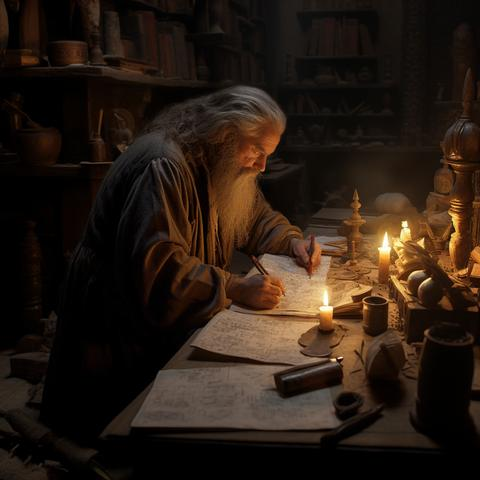

Tu frappes à la porte de la cabane. Un vieil ermite t'accueille et t'invite à entrer. Lorsque tu lui expliques ta mission, son visage devient pâle.
Il t'annonce que le voleur n'est autre qu'un ancien chevalier du roi, qui aurait trouvé refuge dans une forteresse abandonnée. L'ermite possède une carte indiquant l'emplacement de cette forteresse, mais refuse de te la donner gratuitement.
Que fais-tu ?